ETC5512
Lecture 3: Natural Hazards and Impact Warnings
Lecturer: Kate Saunders
Department of Econometrics and Business Statistics
- ETC5512.Clayton-x@monash.edu
- Wild Caught Data
- wcd.numbat.space
Today’s seminar
Back in week 1 we discussed …
Societal importance of open data
What makes high quality open data
Learn about the different types of open data
Learning Objectives
Today I hope to bring a realism to these topics by looking at your first case study!
As we go through this case study think about where you could use the skills you are building to innovate!
Brisbane Floods
February - March 2022
Predicted Extent
Can you tell if these locations were at risk of flooding?
- Queensland University of Technology
- Queensland State Library
- Royal Brisbane Women’s and Childrens Hospital
- If you say so cafe, Taringa
Even zoomed in the map is still not useful for people understand their exposure
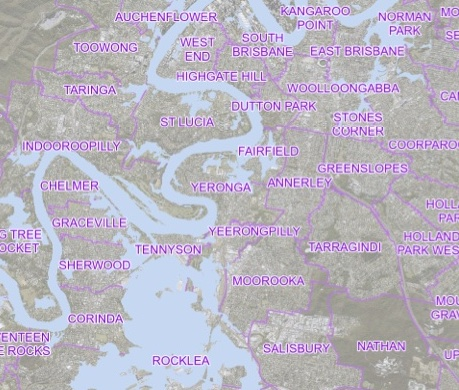
Source: https://www.brisbane.qld.gov.au/ (now expired)
There was a look up table to search addresses
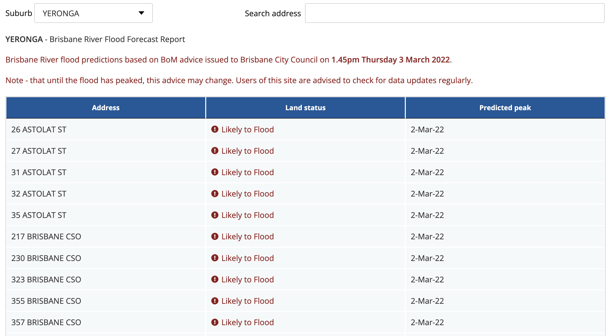
Source: https://www.brisbane.qld.gov.au/ (now expired)
People interpret probabilistic words in differently
Likely roughly corresponds to 50% - 70%.
Source: https://hbr.org/2018/07/if-you-say-something-is-likely-how-likely-do-people-think-it-is
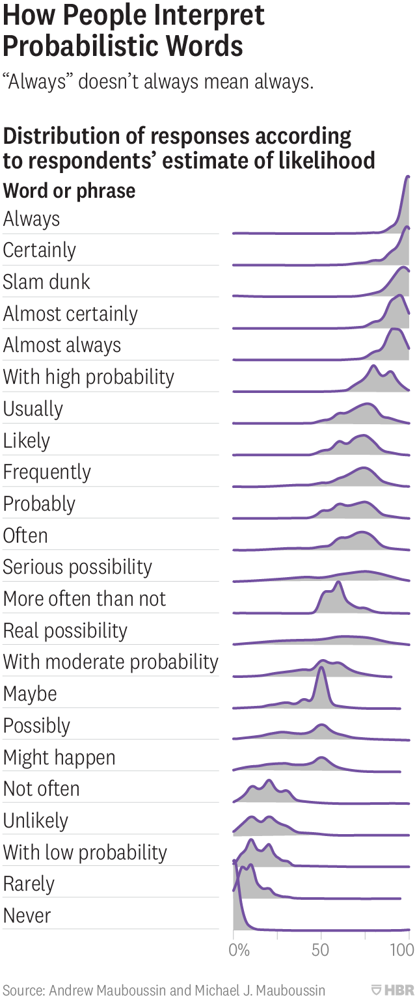
- Let’s say you did decide to evacuate, it was not clear how …
- Road traffic information was out of date, including Google and Uber stopped working
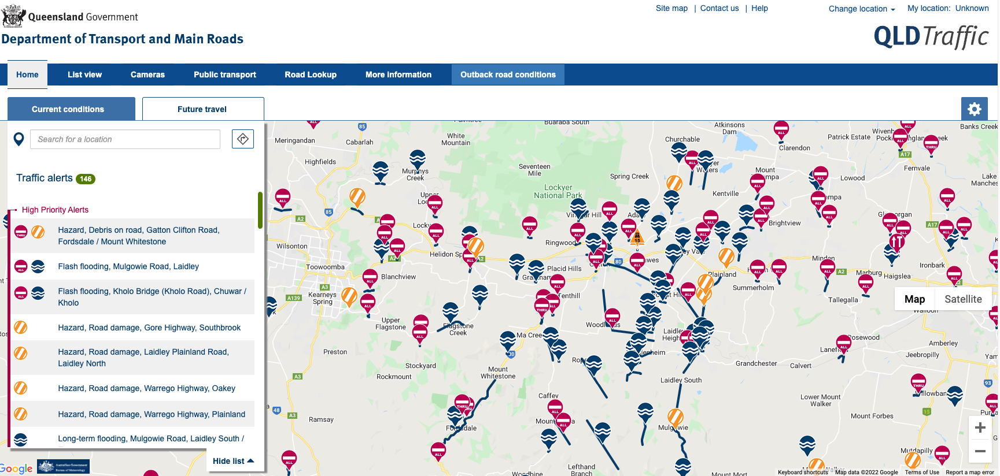
Source: https://qldtraffic.qld.gov.au/ (now expired)
Clear Gaps
Will my home by impacted?
Will I be isolated by flood-waters?
When will I be impacted?
How badly will I be impacted?
Can I evacuate?
So where did it go wrong?
Digital Mud Army: Online Hackathon
Hackathon Topics
- Visualising flood extents
- Real-time social media data
- Road closures
- Comparing past events
- Community vulnerability
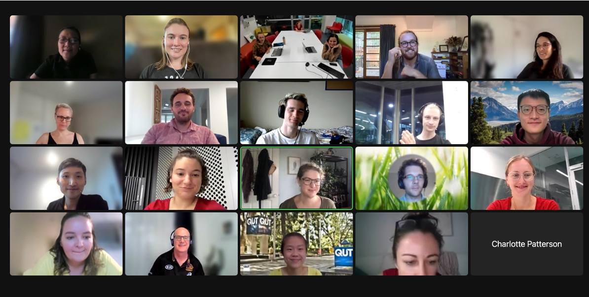
People mucked in to help in lots of different ways - from writing complex code to downloading data manually from webpages
Perspective Paper
Following the hackathon we wrote a perspective paper.
Saunders, K. R., Forbes, O., Hopf, J. K., Patterson, C. R., Vollert, S. A., Brown, K., … & Helmstedt, K. J. (2025). Data-driven recommendations for enhancing real-time natural hazard warnings. One Earth, 8(5) https://doi.org/10.1016/j.oneear.2025.101274.
We’ll discuss this paper and other examples of natural hazards analytics today
Warning Complexity
What statistically makes a good forecast
Forecast Verification1
Calibration: How well does the forecast match the observed frequency?
Sharpness: How confident are we in the forecast?
In practice there are other important factors, including timeliness and the warning communication.
Warning Value Chain
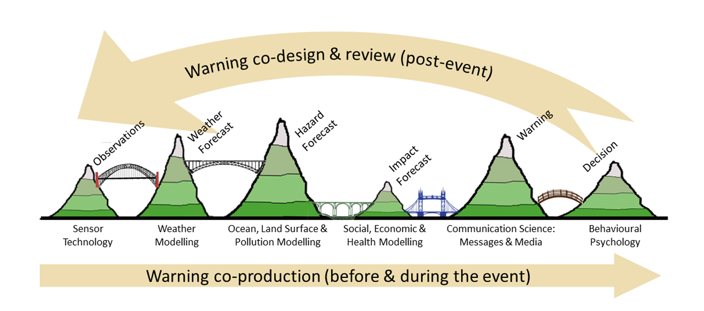
1
Risk Framework
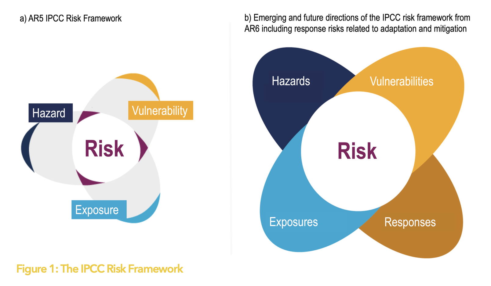
1Data Deluge
Suffering from a digital deluge
People delay taking preventative action while they piece together their data-story
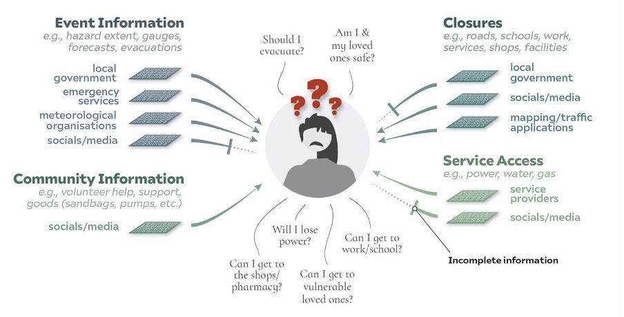
Hazard warnings
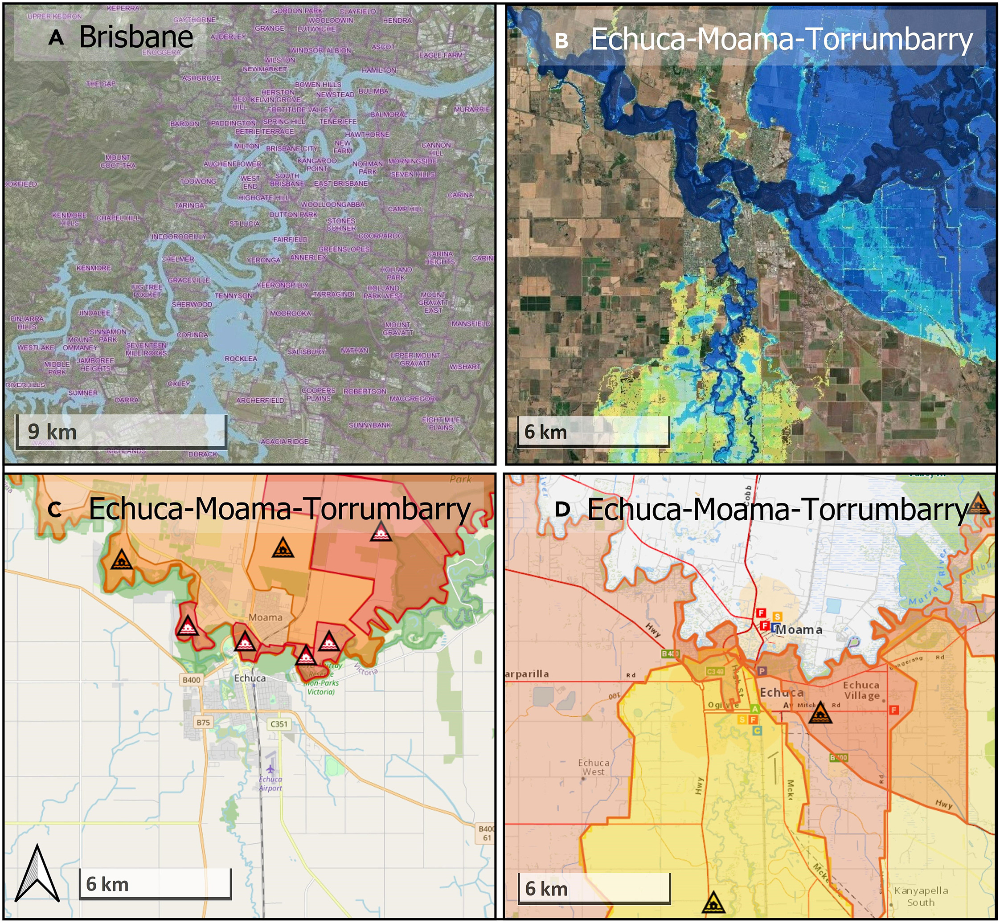
Impact warnings
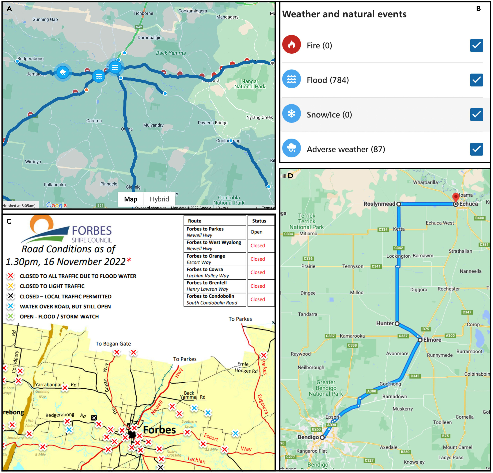
Data Barriers
Impact Forecasts
Natural hazard interact with people’s social and personal contexts
- The same hazard will impact people differently
- People also interpret risk from the same hazard differently
- People need access to different information to understand their impacts
- Indirect impacts from a hazard can still be life threatening
What data?
Take a moment to brainstorm
What are the different types of data you might want if you were issuing a warning?
Who might be the different organisation involved in issuing a warning and how might they need to share data?
Impacts
Broad variety of impacts that intersect with someone socio-personal context
- Service utility outages (eg. Water, sewerage, power, phone, internet.)
- Transport outages (eg. Road closures , public transport outages, disruptions and outages of rideshare services.)
- Emergency services (eg. Changed access to police, fire, ambulance.)
- Other essential services (eg. Changed access to healthcare, hospitals, pharmacies, and supermarkets, including supply disruptions.)
- Support services (eg. Changed access to supports for mental health, domestic violence, and drug and alcohol abuse.)
We need interoperable data to understand how the hazard impacts
Data barriers
Too many of our important data sets are behind pay walls
Where possible data should be open for shared use
Sometimes data is open but there is no existing pipeline or mechanism to use it
This might mean it is not machine readable, its in propriety formats and not interoperable
The data is often not maintained or updated so is not fit for purpose
NSW Hazard Watch
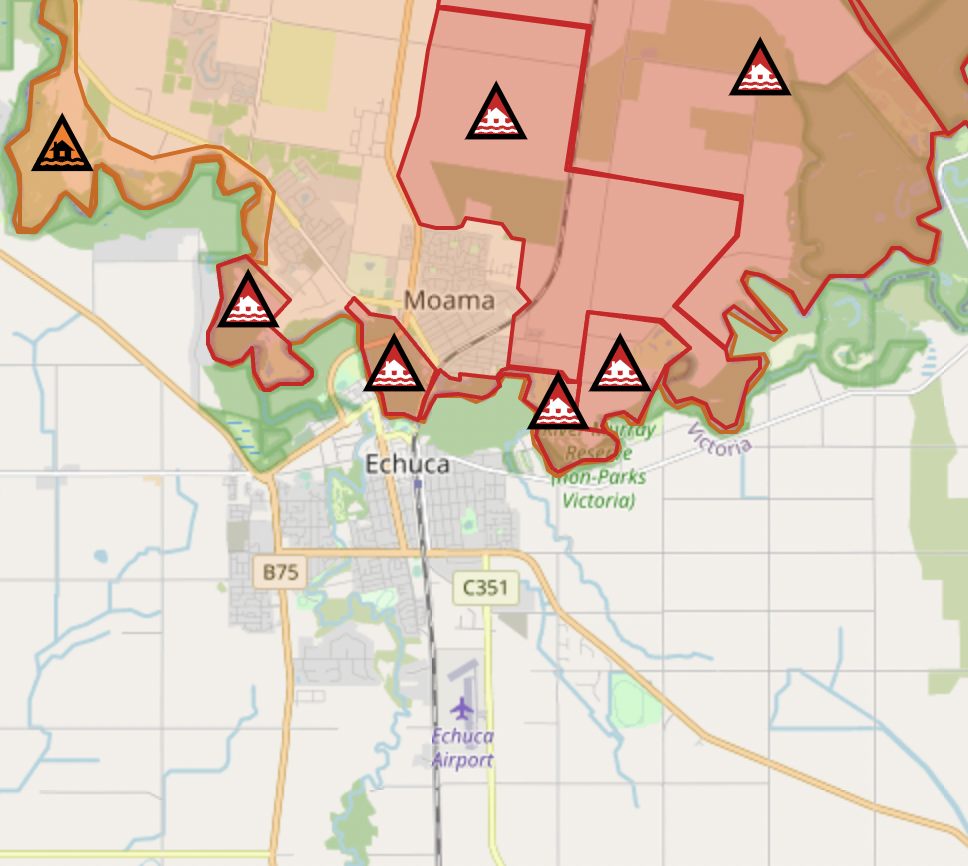
Vic Alert
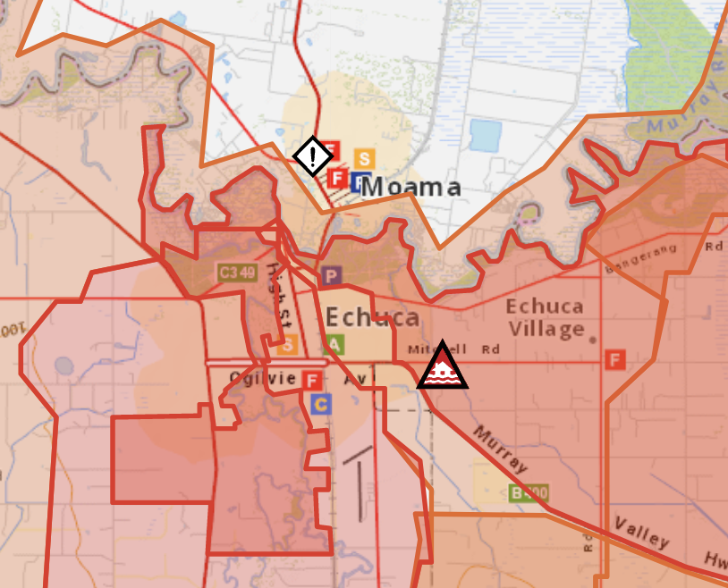
Avoiding data silos
Natural disasters do not adhere to institutional remits or geographic borders!
Gold Standards in Data Science
FAIR principles
- Findable - Accessbile - Interoperable - Reusable
5-star data
- Appropriate license (Ideally Open!)
- Machine-readable, structure format
- Non-propriety formats
- Digital Ojbect Identifier (Can be cited)
- Links to other datasets
We also need meta-data!
Many warnings are not reproducible
If data disappears it is difficult to evaluate if warnings were reliable and sufficient to act upon
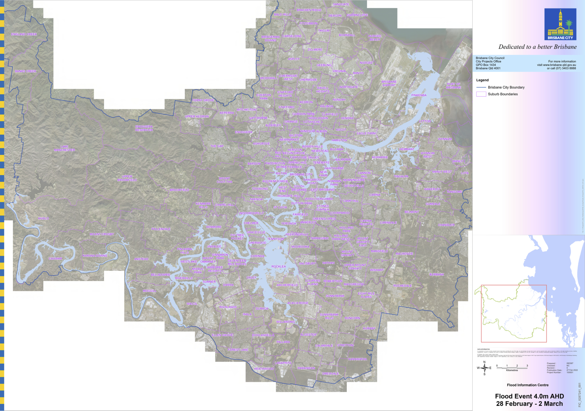
Need to get our data talking!
Then we can have improved, more user-centric warnings
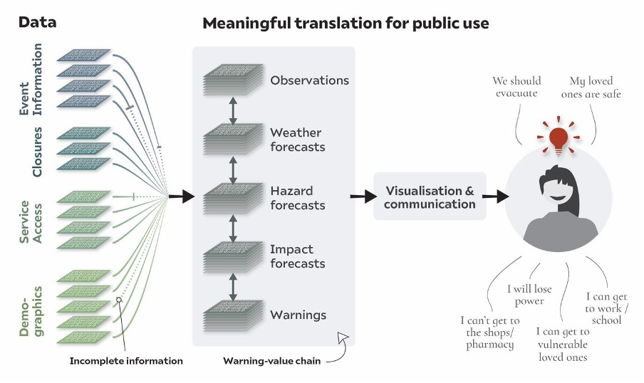
Data equity
Breakout discussion: Time to think
Some regions in Australia are better observed and have better data.
What should the government’s policy be on warning communication:
Should warnings be standardised statewide, or should some communities with better data have more detailed user-centric warnings?
Speaking of equity
In designing digital warning infrastructure, do we need to consider any specific community needs?
Data Innovation
Reminder: Why do we need open data …
Open data has the ability to transform government businesses and society.
Open data allows us to build tools to solve problems in society
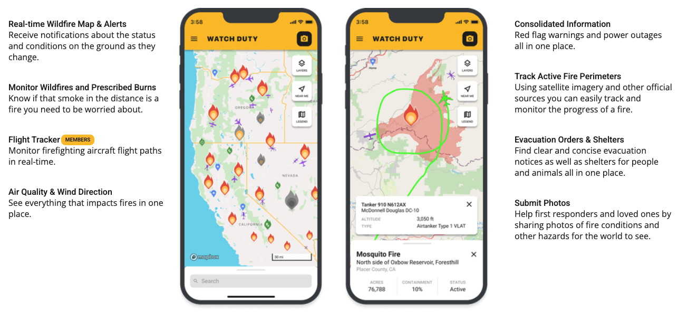
Open data allows us to fact-check mis-information and dis-information
Were the 2020 bushfires caused by arson? The answer is no!
Open data helped us to understand - see analysis submitted to UNDRR, R Spotoroo Package and Geoscience Australia Hotspot data
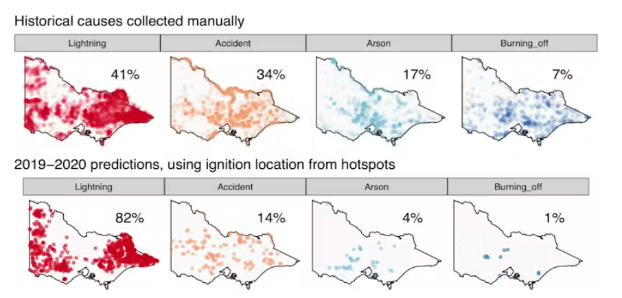
Open data can also helps us to understand where we have knowledge gaps
Current data
Large gaps in our observing network
Temporal frequency of data may be lower than the evolving hazard
Often don’t know the on the ground conditions
For higher resolution data in space and time we need cultivate, novel data sources
Crowd-sourced weather data
Crowd-sourced text, photos and videos (drones)
Crowd-sourced reporting (road closures, environment)
A comment
Government led innovation can be slow
Question
Can you think of why that might be?
Wrap Up
Perspective Paper Recommendations
Going forward
Work towards open, FAIR data and transparent models, particularly for hazard and impact forecasts
Adhere to best practices in visualisation and appropriately integrate interactive elements
Create data infrastructure so that novel data sources, like crowd-sourced data, can be used to support more localised warnings, and
Better incorporate uncertainty into emergency decision-making, visualisation, and warning communication.
Saunders, K. R., Forbes, O., Hopf, J. K., Patterson, C. R., Vollert, S. A., Brown, K., … & Helmstedt, K. J. (2025). Data-driven recommendations for enhancing real-time natural hazard warnings. One Earth, 8(5) https://doi.org/10.1016/j.oneear.2025.101274.
Calls for change
Parliamentary Inquiry into the 2022 Flood Event in Victoria
- Based on the data barriers discussed, a submission was made on 5th June 2023
There are three key points raised in relation to:
1. Adequacy of warning information available for the October flooding on the state border.
2. Our ability to evaluate if warnings were indeed effective given the transparency of the data and transparency of information about the models used to produce the warnings.
3. Our ability to evaluate adequacy of warnings in hindsight given the lack of reproducibility in the warnings and general storage of the data.
Parliamentary Inquiry into the 2022 Flood Event in Victoria
Final report, Finding and recommendations delivered 30th July 2024
Below are findings and recommendations related to my submission
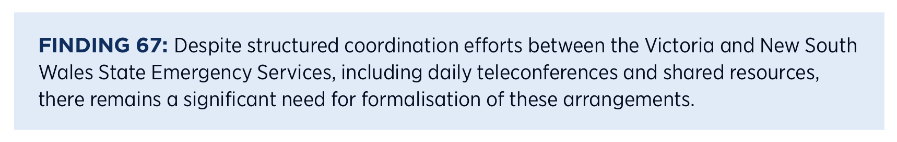
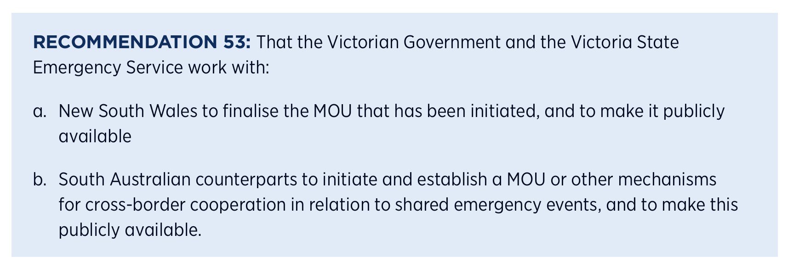
Takeaways
Summary
I want you to leave today:
With a deeper understanding for the societal importance of open data
Whether it be natural hazards, or something else, our world is complex!
Data needs to works together seamlessly (adhere to data best practices!)
Knowing the important role that open data plays in innovation
Feel empowered to use open data to create change
Questions

ETC5512